Rectangular command (3D features)
Use the synchronous Rectangular pattern command (3D features) command  to construct a rectangular pattern of selected elements. For example, you can construct
a hole feature, and then construct a rectangular pattern of holes using the hole feature
as the parent element of the pattern.
to construct a rectangular pattern of selected elements. For example, you can construct
a hole feature, and then construct a rectangular pattern of holes using the hole feature
as the parent element of the pattern.
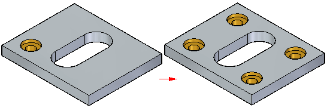
You can suppress pattern occurrences to define gaps in a pattern to avoid other features.
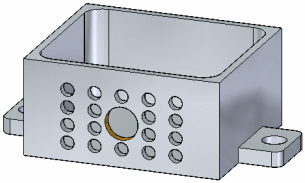
Workflow
-
Select the features to pattern.
-
Choose the Rectangular pattern command.
-
Position the pattern profile preview.
-
Define the pattern parameters using command bar and the dynamic input boxes in the graphics window.
Selecting the elements to pattern
You can select features, faces, and face sets, as the parent elements to pattern. You can select the elements in the graphics window or in PathFinder.
Starting the Rectangular Pattern command
The Rectangular pattern command is only available after you select valid elements to pattern.
Rectangular pattern profile
You pause the cursor over a face and dynamically drag the rectangular profile on that face. You can also press F3 to lock to the face if desired.
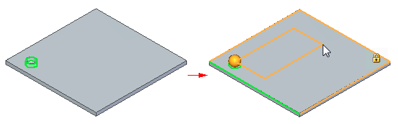
While in the dynamic pattern profile step, you can orient the profile X direction to be parallel to a face edge. Press N to cycle through the face edges to align to the highlighted edge. The face edge highlights in green. If another X direction in needed other than the face edges available, you reorient the pattern after defining pattern profile. Use the pattern steering wheel torus to change the orientation.
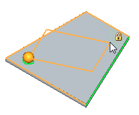
You press C to center the pattern features on the pattern profile. You can press C in the pattern profile definition step or after defining the pattern profile location.
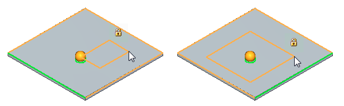
Once the pattern profile is defined, the preview pattern displays. You can switch between a centered arrangement (1) to a corner arrangement (2) by pressing C. You edit an existing rectangular pattern’s arrangement by pressing C while in the edit pattern mode.
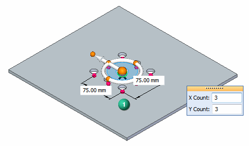
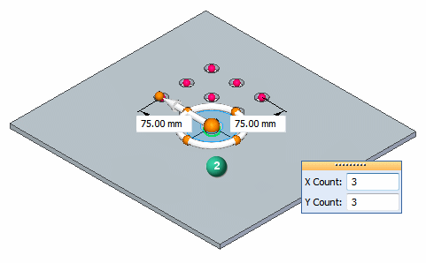
When in corner arrangement, you press N to cycle through the quadrants.
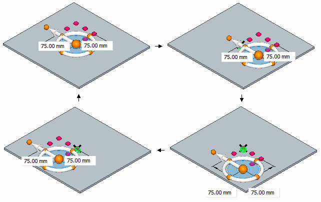
When the pattern profile definition is complete, a default preview pattern displays, along with various on-screen tools you can use to define and edit the pattern parameters.
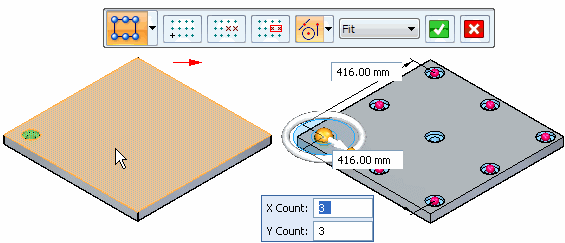
These on-screen tools include command bar (A), occurrence count box (B), dynamic edit boxes (C), occurrence handles (D), and the orient vector tool (E).
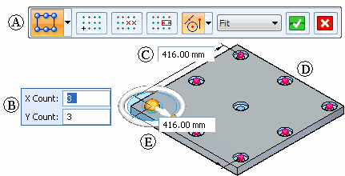
Defining the pattern parameters
You can use the on-screen tools to define the following pattern parameters:
-
Occurrence count
-
Occurrence spacing
-
Pattern angle
-
Suppressed occurrences
Options are also available for adding new features to an existing pattern and positioning the pattern origin.
Defining occurrence count and spacing
Two options on the command bar are available for defining the occurrence count and spacing of pattern occurrences:
-
Fit
-
Fixed
These options specify whether you want to define the overall height and width of the pattern, or the spacing between individual pattern occurrences. With both methods, you specify the number of occurrences in the X and Y directions using the occurrence count boxes. You can also define the spacing by dragging occurrence handles, which is described later.
-
Fit example
With the Fit option, you specify the number of occurrences in the X and Y directions, and the overall height and width of the pattern. The x spacing and y spacing values are calculated automatically.
For example, you can set the Fit option and then specify an X Count of 5, a Y Count of 4, a width of 70, and a height of 35.
The x and y spacing between each occurrence is calculated automatically.
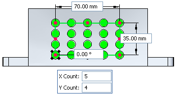
-
Fixed example
With the Fixed option, you specify the number of occurrences in the X and Y directions, and the X and Y spacing. The width and height values are calculated automatically.
For example, you set the Fixed option and then specify an X Count of 5, a Y Count of 4, an X spacing of 18, and a Y spacing of 12.
The width and height is calculated automatically.
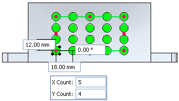
Design Intent pattern behavior
Patterns participate in Design Intent detection. Faces of pattern occurrences are detected during a synchronous move and the pattern feature maintains its setting as Fit or Fixed. You can dimensionally constrain a pattern occurrence to an edge or other faces in the model. When another occurrence in the pattern moves, the dimensional constraint is honored and the pattern adjusts accordingly.
Design Intent detects hole faces only for corner occurrences of a rectangular pattern. If the master occurrence is at a corner, it will still use the feature origin.
Using dynamic edit boxes and occurrence handles
You use the dynamic edit boxes to specify the exact values you want for occurrence count and spacing. For example, when the Fit option is set, you can use the dynamic edit boxes to specify the total number of occurrences in the X and Y directions, and the overall height and width of the pattern.
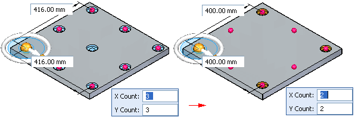
You can also change the height and width of the pattern by dragging an occurrence handle using the cursor. First, position the cursor over an occurrence handle, and then drag the handle to a new location. The values in the height and width boxes dynamically update.
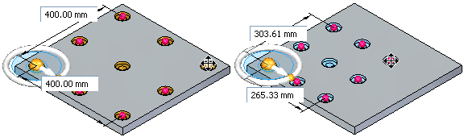
Orient vector tool
The orient vector tool is similar to the steering wheel, and you can use it to manipulate the angular orientation of the pattern. For example, you can use the torus on the orient vector tool to rotate the pattern dynamically by dragging the cursor.
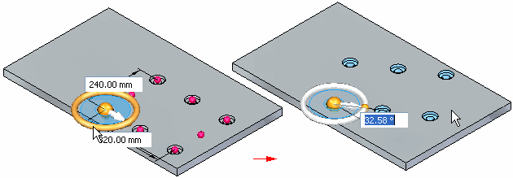
You can use the knobs on the orient vector tool to reorient the pattern in 90 degree increments.
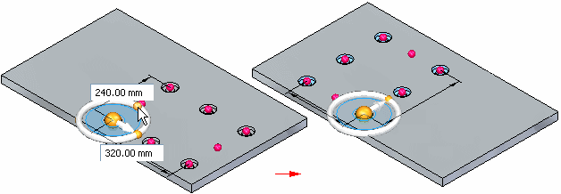
You can also reposition the origin of the pattern to another keypoint on the model.
Suppressing pattern occurrences
You can suppress individual patterns occurrences or you can suppress a group of pattern occurrences. You can suppress occurrences while you are constructing the pattern or you can edit the pattern later to suppress occurrences.
-
Suppressing individual occurrences
You suppress individual occurrences in patterns with the Suppress Occurrence button on the command bar. With the pattern feature selected, you can click the Suppress Occurrence button on the command bar, and then click occurrence symbols to specify which occurrences you want to suppress (A). The symbols change size and color to indicate that the corresponding occurrences are suppressed.
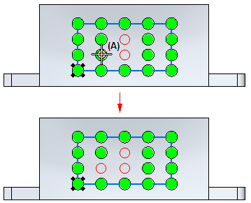
You can also drag the cursor to fence any number of occurrences.
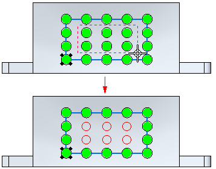
This option is useful for when you need to define gaps in a large pattern, for example, to leave space for another feature.
You can also display suppressed pattern occurrences with the Suppress Occurrence button. Click the button and then select the suppressed occurrences you want to reappear.
-
Suppressing occurrences using a sketch region or plane
You can also suppress pattern occurrences using a sketch region or planar face. With the pattern selected, you can click the Suppress Regions button, and then select the sketch region that encloses the occurrences you want to suppress. The occurrences inside the region suppress, and a suppression direction arrow appears.
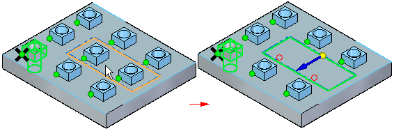
You can click the direction arrow to specify that the occurrences outside the sketch region suppress instead.
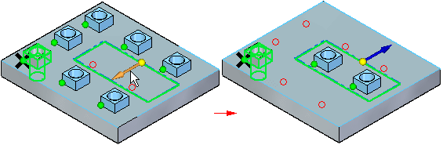
Editing pattern parameters
You edit the parameters for an existing pattern by first selecting the pattern using PathFinder or QuickPick. Selecting the pattern displays the pattern action handle. You can then click the pattern action handle to display the same set of on-screen tools that appear when you create a pattern.
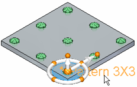
Adding new elements to an existing pattern
You can add new elements to an existing pattern using the Add to Pattern button on the command bar when you are editing an existing pattern. For example, you can add a hole feature to any occurrence on a pattern.
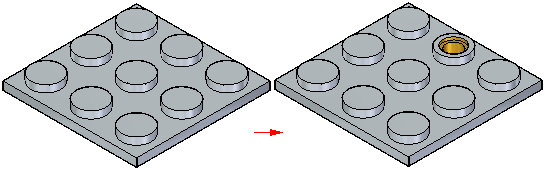
You can then edit the pattern feature, and use the Add to Pattern button on the command bar to select the hole feature and add it to the pattern.
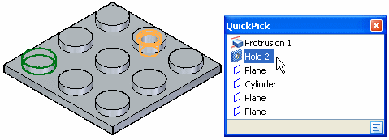
You must also specify the occurrence position onto which you added the hole feature. The feature is then added to all occurrences in the pattern.
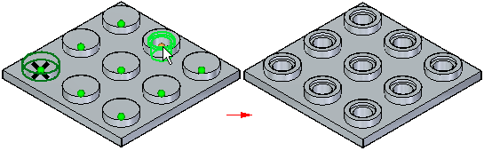
Synchronous editing of pattern features
Patterns participate in Design Intent relationship detection. Faces of pattern occurrences are detected during a synchronous move and the pattern feature maintains its setting as Fit or Fixed. You can dimensionally constrain a pattern occurrence to an edge or other faces in the model. When another occurrence in the pattern moves, the dimensional constraint is honored and the pattern adjusts accordingly.
In the example below, the four corner pattern occurrences (shown in red) are concentric with rounds. As you move a face, the rounds move bringing along the concentric pattern occurrences and the pattern adjusts accordingly.
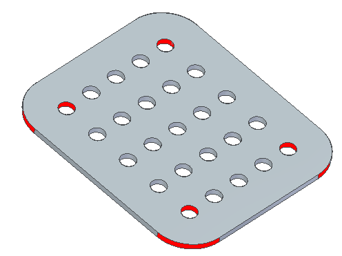
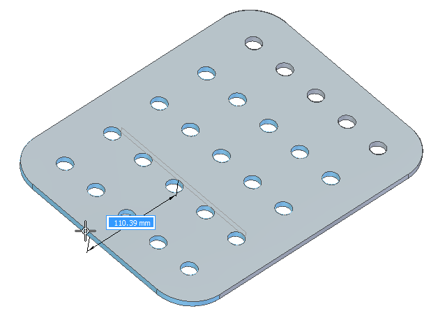
Deleting pattern occurrences
You can also delete pattern occurrences. Position the cursor over the pattern occurrence you want to delete. When the ellipsis appears, left-click to display QuickPick. You can then use QuickPick to select the pattern occurrence, and then press Delete to delete it.
When you delete a pattern occurrence, the software is actually suppressing the corresponding occurrence symbol on the pattern. Deleting, rather than suppressing, an occurrence can be useful when working with large or complex models, because you do not have to edit the pattern feature to suppress the occurrence. To restore the deleted occurrence, you can use the workflow for displaying suppressed occurrences.
Guidelines for creating pattern features
-
You can pattern multiple elements in one operation.
-
You can suppress individual occurrences in a pattern.
-
You can delete individual feature occurrences in a pattern.
-
You can add features to an existing pattern.